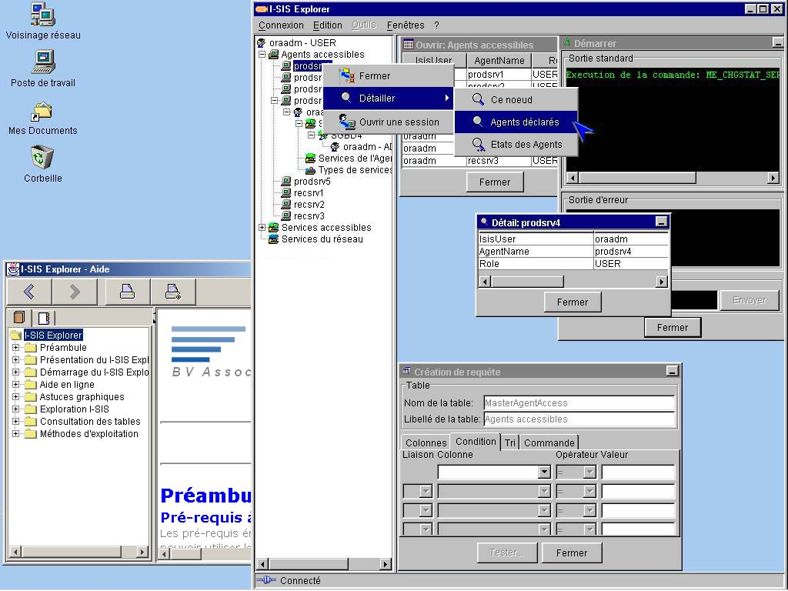

I-SIS Explorer

Guide d'utilisation
|
|
I-SIS Explorer |
|
|
Guide d'utilisation |
||
L'apparence de I-SIS Explorer adapte celle de la plate-forme sur laquelle il s'exécute. Vous constatez la similitude avec les autres applications, sur les formes et les couleurs des barres, des icônes, des arborescences, des fenêtres...

Le I-SIS Explorer conserve aussi de la plate-forme quelques fonctionnalités graphiques intéressantes:
Les boutons (iconification, réduction / agrandissement, fermeture) des fenêtres principales : le I-SIS Explorer (cf. «Gérer la fenêtre de I-SIS Explorer») et son aide (cf. «Utilisation de l'aide en ligne»),
Les arborescences avec des connecteurs de réduction / déploiement (cf. «Réduire et déployer un nœud»),
La sélection d'objet se visualise comme pour toute autre application, avec une sur-brillance. Des éléments consécutifs (dispersés) sont sélectionnés ensembles, sous I-SIS, avec la touche [Shift] ([Ctrl]).
Copyright © 2003 BV Associates. Tous droits réservés.